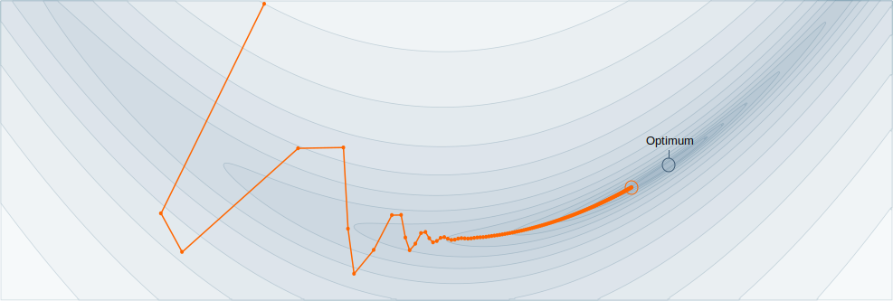

Design a robust optimizer for any Machine Learning architecture. Submit your optimizer to this challenge at the Applied Machine Learning Day 2020 and make an impact in the everyday research-life of ML practitioners.
train.py.
A good start is to slightly modify our Adam optimizer and test it on the task provided in example_tasks/.
Submission deadline: Friday, January 10th, 6pm (Swiss time).
You are required to submit a ZIP file before the deadline to autotrain@groupes.epfl.ch containing:README.md team name and team members,train.py code of your optimizer,report.pdf 4 pages (two-columns) report describing your submission.